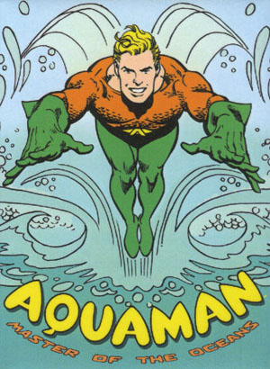

My name is Aquaman. As you might be able to tell by my name, I spend a lot of time in the water (aqua means water).
I fight a lot of crime, especially any types of bad things occuring either on or beneath the surface of the water.
About Me
 Some people call me a superhero, but actually, I am just doing my job. My dad was outcast from the lost city of Atlantis, so my ability to breathe underwater is all genetics. My other skills that allow me to get the upperhand on bad guys include the ability to swim fast, and the ability to communicate with marine life to get them to help me out.
What I Do For a Living
Well, as far as I can see, there does not seem to be any end to villainy. As much as I might try to stop bad guys, it seems that every day I wake up: another and another and another.
Some of my main enemies right now:
Under-Water Villains
- Aquabeast
- Black Manta
- The Creature King
- Ocean Master (biggest jerk of them all)
- Mr. Neptune
- King Sohark
Land Villains
- Count Vitto
- Dr. Starbuck
- Electric Man
- Tiamat
I spend a lot of time kicking it with other super heros in the Justice League: Superman, Batman, Wonder Woman, the Flash, and the rest of the crew. We go through stretches where we don't see each other too often (generally tangled up with trying to stop some elaborate villainous plot), but we always keep in touch.
My short-term plans are basically to keep doing what I am doing until hopefully we can figure out some way of getting the upper hand on evil as a whole.
Right now, my biggest concern is (obviously) the environment. It's a hard struggle trying to get these jerks to stop messing up the waters on this planet.
The Future
Hopefully, after all this nonsense stops, I'd like to settle down and have a family.
Every once in a while I come across an interesting woman or mermaid, but the demands of my job always seem to make the relationship go sour.
Fortunately, unlike people like Batman or Superman, I don't have to mess with trying to maintain an alter-ego (I don't know how those guys do it!).
I would also eventually like to spend a bit more time on land or maybe even make it into outer space. Just because I'm Aquaman doesn't mean I don't have ambitions to see other things in other places.
Where to Find Out More
If you want to find out more about me, or keep in touch, you can follow me on Twitter.